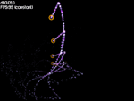

Tutorial 04 - Rendering to texture
In this tutorial we will learn how to use render targets.

First, we declare the variables to handle the render target and
the sprite that we will associate with it:
hgeSprite* tar;
HTARGET target;
During some events like video mode switching, the render target's
texture handle may change. So, we write the GfxRestoreFunc function
in which we obtain the new render target's texture:
bool GfxRestoreFunc()
{
if(tar && target)
tar->SetTexture(hge->Target_GetTexture(target));
return false;
}
In the RenderFunc we first render
all our stuff onto the texture, specifying our render target
in the Gfx_BeginScene call:
hge->Gfx_BeginScene(target);
hge->Gfx_Clear(0);
par->Render();
spr->Render(x, y);
hge->Gfx_EndScene();
Then we render several instances of the texture to the screen:
hge->Gfx_BeginScene();
hge->Gfx_Clear(0);
for(i=0;i<6;i++)
{
tar->SetColor(0xFFFFFF | (((5-i)*40+55)<<24));
tar->RenderEx(i*100.0f, i*50.0f, i*M_PI/8, 1.0f-i*0.1f);
}
fnt->printf(5, 5 ,HGETEXT_LEFT, "dt:%.3f\nFPS:%d",
hge->Timer_GetDelta(), hge->Timer_GetFPS());
hge->Gfx_EndScene();
In the WinMain function we attach our GfxRestoreFunc function:
hge->System_SetState(HGE_GFXRESTOREFUNC, GfxRestoreFunc);
Then, after HGE initiation, we create a render target and a sprite
that we will use to make rendering of the created texture easier:
target=hge->Target_Create(512,512,false);
tar=new hgeSprite(
hge->Target_GetTexture(target),0,0,512,512);
tar->SetBlendMode(
BLEND_COLORMUL | BLEND_ALPHAADD | BLEND_NOZWRITE);
During shutdown we delete the sprite that we used to render
the generated texture and the render target itself:
delete tar;
hge->Target_Free(target);
The rest of shutdown process is identical to the one demonstrated in
previous tutorials.
The complete source code with detailed comments for this tutorial you may find in the folder
tutorials\tutorial04. The required media files you'll find in the folder tutorials\precompiled.
|